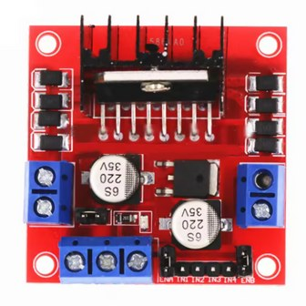
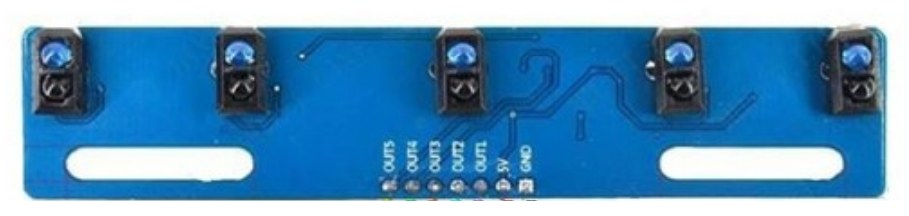
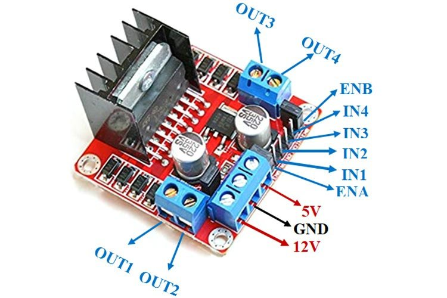
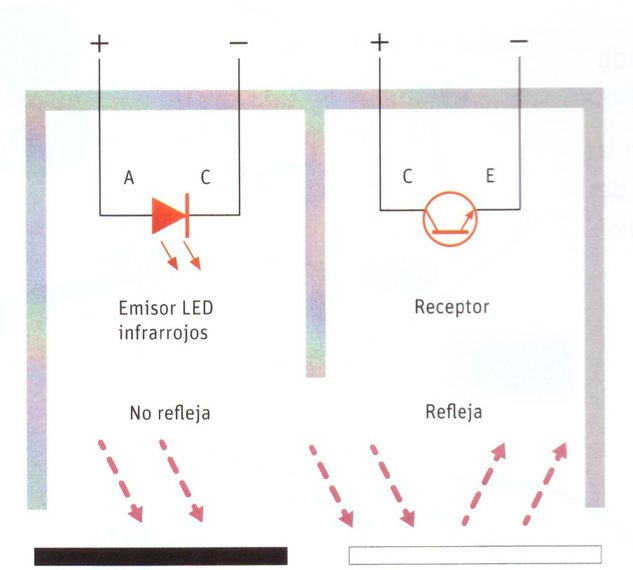
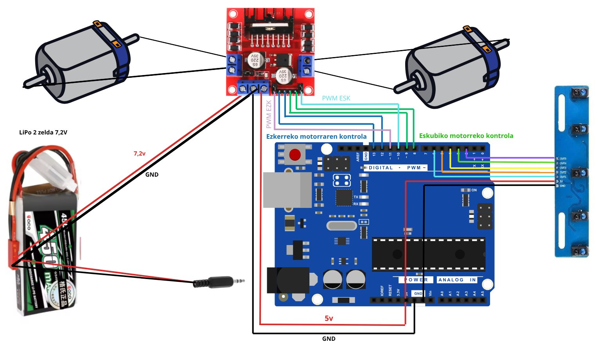

L298N motor kontrolatzailea
Arduinoaren pinek ez dute motor bat mugitzeko adina korronte ematen. L298N moduluak bi motor mugi ditzake bi noranzkotan (edo lau motor noranzko bakarrean).
Robot honek lurreko lerro beltz bat jarraitzen du bost sentsore infragorriri esker. Bi urratsetan eraikiko dugu: lehenik motorrak piztu eta itzali besterik ez, eta gero abiadura kontrolatuz, bihurguneak leunago hartzeko. Programazioa mBlock-ekin egiten da, eta nahi duenak Arduino kodea ere badu.
Robota hiru zatitan banatzen da: kontrola (Arduinoa), potentzia etapa (bateria eta motor kontrolatzailea) eta sentsoreak.

Arduinoaren pinek ez dute motor bat mugitzeko adina korronte ematen. L298N moduluak bi motor mugi ditzake bi noranzkotan (edo lau motor noranzko bakarrean).

Sentsore bakoitza opto-akoplagailu bat da: LED infragorri igorle bat eta fototransistore hartzaile bat. Irteerak: OUT1…OUT5, 5V eta GND.
Litiozko bateria arina eta indartsua, robotikan eta irrati-kontrolean oso erabilia. NiCd edo NiMH bateriek baino errendimendu handiagoa du.
LiPo bateriak kontuz erabili. Kargatu beti LiPo-rako kargagailu batekin eta begiratuta, ez utzi guztiz deskargatzen, eta ez erabili kolpatuta edo puztuta badago. Informazio gehiago: LiPo baterien segurtasuna.


Sentsore batek gainazal beltza ikusten badu 0 ematen du (0 V), eta zuria ikusten badu 1 (5 V). Arduinoak bost balio horiek irakurri eta motorrei zer egin erabakitzen du.
| S1 S2 S3 S4 S5 | Egoera | 1. fasea (piztu / itzali) | 2. fasea (PWM) |
|---|
S1 ezkerrekoena da eta S5 eskuinekoena, robota atzetik begiratuta eta aurrera doala. Lerroa eskuinean geratzen bada, eskuineko motorra moteldu edo gelditzen da robota eskuinera bira dadin.
flowchart TD
A([HASIERA]) --> B[Aldagaiak izendatu]
B --> C[Sarrerak eta irteerak hasieratu]
C --> D[/Sentsoreen egoera irakurri/]
D --> E{Erdiko sentsorea beltza
eta besteak zuriak?}
E -- Bai --> E1[Bi motorrak aurrera]
E -- Ez --> F{Eskuineko lehen sentsorea
beltza eta besteak zuriak?}
F -- Bai --> F1[Eskuineko motorra geldi edo motel
ezkerrekoa aurrera]
F -- Ez --> G{Ezkerreko lehen sentsorea
beltza eta besteak zuriak?}
G -- Bai --> G1[Ezkerreko motorra geldi edo motel
eskuinekoa aurrera]
G -- Ez --> H{Eskuineko bigarren sentsorea
beltza eta besteak zuriak?}
H -- Bai --> H1[Eskuineko motorra geldi
ezkerrekoa aurrera]
H -- Ez --> I{Ezkerreko bigarren sentsorea
beltza eta besteak zuriak?}
I -- Bai --> I1[Ezkerreko motorra geldi
eskuinekoa aurrera]
E1 --> D
F1 --> D
G1 --> D
H1 --> D
I1 --> D
I -- Ez --> D
classDef once fill:#55c6b7,stroke:#1a5f56,color:#0b2b27
classDef loop fill:#c69ac7,stroke:#5e3a60,color:#2a1530
class B,C once
class D,E,F,G,H,I,E1,F1,G1,H1,I1 loop
Berdea: behin bakarrik egiten diren atazak (setup). More-arrosa: behin eta berriz errepikatzen direnak (loop / betiko).
Motor bakoitza piztuta edo itzalita dago. Erraza da muntatzen eta programatzen, baina bihurguneetan robotak kolpeka egiten du.
| Nondik | Nora |
|---|---|
| L298N IN1 | Arduino D11 |
| L298N IN2 | Arduino D10 |
| L298N IN3 | Arduino D9 |
| L298N IN4 | Arduino D8 |
| Bateria + | L298N 12V |
| Bateria − | L298N GND |
| L298N 5V | Arduino 5V |
| L298N GND | Arduino GND |
| Sentsore modulua | Arduino |
|---|---|
| OUT1 (S1) | D2 |
| OUT2 (S2) | D3 |
| OUT3 (S3) | D4 |
| OUT4 (S4) | D5 |
| OUT5 (S5) | D6 |
| 5V | 5V |
| GND | GND |
Fase honetan L298N-aren ENA eta ENB jumperrak jarrita utzi: horrela motorrak beti abiadura osoan dabiltza. Ezkerreko motorra OUT1/OUT2 bornetan eta eskuinekoa OUT3/OUT4 bornetan.
Ireki ide.mblock.cc edo mBlock 5 aplikazioa.
Gailuak fitxan, gehitu Arduino Uno eta ezarri Kargatu modua (ez Zuzenean).
Sortu bost aldagai: egoeraS1 … egoeraS5.
Eraiki behean dagoen programa (edo ireki deskargatutako .mblock fitxategia), konektatu Arduinoa USB bidez eta sakatu Kargatu.
| Gida honetan | mBlock (gaztelaniaz) |
|---|---|
| Arduino Uno abiaraztean | cuando Arduino Uno se inicia |
| betiko | para siempre |
| ezarri … balioa | fija … a |
| irakurri pin digitala | lee pin digital |
| baldin … orduan | si … entonces |
| … eta … | … y … |
| ezarri pin digitala … altua / baxua | pon el pin digital … a alto / bajo |
| ezarri PWM pina … balioa | pon el pin PWM … a |
| idatzi serie-atakan | escribir en puerto serie |
Kargatzen…
Orain motor bakoitzaren abiadura kontrolatzen dugu PWM bidez. Bihurgune leunetan motor bat moteldu besterik ez da egiten, eta robota azkarrago eta finago doa.
PWM (Pulse Width Modulation) seinalea oso azkar pizten eta itzaltzen da. Denbora gehiago piztuta egon, orduan eta indar gehiago jasotzen du motorrak. Arduinoan balioa 0tik (geldi) 255era (abiadura osoa) doa, eta ~ ikurra duten pinetan bakarrik erabil daiteke: 3, 5, 6, 9, 10 eta 11. Guk D10 eta D11 erabiliko ditugu.

Kendu ENA eta ENB jumperrak eta konektatu pin horiek Arduinoaren PWM pinetara. Ezkerreko motorraren noranzko kableak D10/D11-tik D12/D13-ra pasatzen dira, D11 PWMrako libre geratzeko.
| L298N | Arduino | Zertarako |
|---|---|---|
| ENA | D11 (~PWM) | Ezkerreko motorraren abiadura |
| IN1 | D13 | Ezkerreko motorraren noranzkoa |
| IN2 | D12 | |
| IN3 | D9 | Eskuineko motorraren noranzkoa |
| IN4 | D8 | |
| ENB | D10 (~PWM) | Eskuineko motorraren abiadura |
Sentsoreak eta elikadura 1. fasean bezala geratzen dira.
Egitura berbera da: sentsoreak irakurri eta bost baldintzak egiaztatu. Aldaketa bakarra: motor bakoitzari ezarri PWM pina blokearekin abiadura bat ematen zaio. Probatu 150-en ordez beste balio batzuk zuen pistan hobeto dabilen ikusteko.
Kargatzen…
Robotak ez du lehen aldian ondo funtzionatzen? Normala da. Begiratu hauek.
Trukatu motor horren bi kableak L298N-aren bornean (OUT1↔OUT2 edo OUT3↔OUT4). Ez da programa aldatu behar.
Sentsore-barra alderantziz dago, edo motorrak trukatuta daude. Ziurtatu S1 (OUT1) robotaren ezkerrean dagoela eta ezkerreko motorra OUT1/OUT2 bornean. Bestela, trukatu programan eskuineko eta ezkerreko motorren balioak.
Ireki serie-monitorea (9600 baud) eta begiratu bost balioak. Jarri sentsoreak lurretik gertu, milimetro gutxira, eta egiaztatu 5V eta GND ondo konektatuta daudela.
Lerroa bi sentsoreren artean geratzen bada (adibidez 1 1 0 0 1), ez da bost baldintzetako bat ere betetzen eta robotak aurreko agindua mantentzen du. Simulagailuan ikus dezakezu. Erronka: gehitu baldintza berriak egoera horietarako.
Bateria ahul dago edo GND komuna falta da. Kargatu bateria eta egiaztatu bateriaren GND, L298N-arena eta Arduinoarena lotuta daudela.